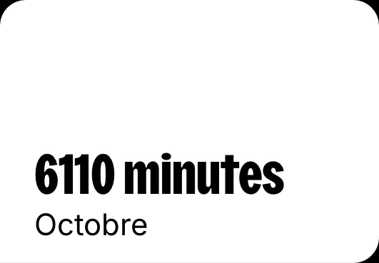

Musique
Depuis que je suis jeune, je passe mon temps à écouter de la musique. Quand je travaille, quand je me balade, sous la douche ou en voiture, seul ou avec mes amis… elle fait partie de mon quotidien. Elle m’aide à m’apaiser et à prendre soin de moi.
J’aime écouter des styles différents mais je préfère la pop, le rap et le RnB, avec des artistes comme Ariana Grande, Theodora, Katseye, Kendrick Lamar, Adela ou Zara Larsson. Ce qui me fascine chez eux, c’est leur façon de superposer les sons et les voix. J’adore décortiquer ces couches pour comprendre comment leur mélange peut être aussi harmonieux. Qu’il s’agisse d’un son qui n’apparaît qu’une fois ou d’une harmonie qu’on entend à peine, je cherche à savoir ce que chaque élément apporte au morceau dans son ensemble.
